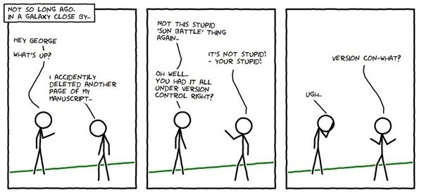

Github

The “Git” in GitHub
To understand GitHub, you must first have an understanding of Git. Git is an open-source version control system that was started by Linus Trovalds – the same person who created Linux. Git is similar to other version control systems – Subversion, CVS, and Mercurial to name a few.
The Big Oxmox advised her not to do so, because there were thousands of bad Commas, wild Question Marks and devious Semikoli, but the Little Blind Text didn’t listen. She packed her seven versalia, put her initial into the belt and made herself on the way. When she reached the first hills of the Italic Mountains, she had a last view back on the skyline of her hometown Bookmarksgrove, the headline of Alphabet Village and the subline of her own road, the Line Lane.
Version control systems
So, Git is a “version control system,” what’s that mean? When developers are creating something (an application, for example), they are making constant changes to the code and releasing new versions, up to and after the first official (non-beta) release.
Version control systems keep these revisions straight, and store the modifications in a central repository. This allows developers to easily collaborate, as they can download a new version of the software, make changes, and upload the newest revision. Every developer can see these new changes, download them, and contribute.
Similarly, people who have nothing to do with the development of a project can still download the files and use them. Most Linux users should be familiar with this process, as using Git, Subversion, or some other similar method is pretty common for downloading needed files, especially in preparation for compiling a program from source code.
The “Hub” in GitHub
Git is a version control system, similar but better than the many alternatives available. So, what makes GitHub so special? Git is a command-line tool, but the center around which all things involving Git revolve – effectively, the Hub, is GitHub.com, where developers can store their projects and network with likeminded people.
| Feature | Information |
|---|---|
| Repository | A repository is a location where all the files for a particular project are stored, usually abbreviated to “repo.” Each project will have its own repo, and can be accessed by a unique URL. |
| Forking a repo | “Forking” is when you create a new project based off of another project that already exists. This is an amazing feature that vastly encourages the further development of programs and other projects. If you find a project on GitHub that you’d like to contribute to, you can fork the repo, make the changes you’d like, and release the revised project as a new repo. If the original repository that you forked to create your new project gets updated, you can easily add those updates to your current fork. |
| Pull requests | You fork a repository, make a great revision to the project, and want it to be recognized by the original developers, maybe even included in the official project/repository. You can do so by creating a pull request, so the authors of the original repository can see your work, and then choose whether or not to accept it into the official project. Whenever you issue a pull request, GitHub provides a perfect medium for you and the project’s maintainer to communicate. |
| Social Networking |
The social networking aspect of GitHub is probably its most powerful feature, and is what allows projects to grow more than anything else. Each user on GitHub has their own profile, which can act like a resume of sorts, showing your past work and contributions to other projects via pull requests. Project revisions are able to be discussed publicly, so a mass of experts can contribute knowledge and collaborate to advance a project forward. Before the advent of GitHub, developers interested in contributing to a project would usually need to find some means of contacting the authors, probably by email, and then have to convince them that their contribution is legit and they can be trusted. |
| Changelogs | When multiple people are collaborating on a project, it’s really hard to keep track of who changed what, and to keep track of the revisions that took place. GitHub takes care of this problem by keeping track of all the changes that have been pushed to the repository. |
GitHub isn’t just for developers
All this talk about how GitHub is ideal for programmers may have you believing that they are the only ones who will find it useful. Although it’s a lot less common, GitHub can actually be used for any types of files – so if you have a team that is constantly making changes to a word document, you can actually use GitHub as your version control system. This practice isn’t common as there are better alternatives, but keep it in mind.